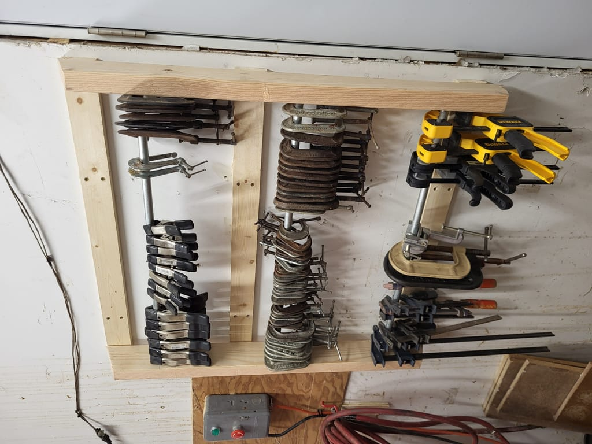

Clamp Storage
Published 2023-07-23

I bought a large bin of C-clamps from an estate sale for only a few dollars a few years ago. I think I spent $5? maybe $10? Since then, most of the clamps had been either out of sight in the bin or clamped to a Burt Munro inspired shelf I have over my door for dirtbike parts I've broken. The clamps kept falling off when I'd close the door too hard.

As usual, I was too busy doing the project to take progress photos, but I can provide measurements. I had an idea of what I wanted to do, but ultimately didn't come up with this design.
I had some leftover conduit from a project so I turned to google and looked for some examples of clamp storage that used it and found almost the exact design I vaguely had in my head. I came up with the 12" measurement between the conduit to accommodate longer clamps in the future. The main difference between my rack and Popular Woodworking's is that I didn't take the time to dado slots for the 1x3 stringers in the 2x4s. For garage/tool storage, I typically care about function over form.
Sources:
Material & Tools
- 1 2x4,
- 90" of 1/2 or 3/4 conduit (I used 1/2 conduit, the external measurement is close to 3/4)
- Forstner Drill bit
- 24 - 1 1/2" or larger Screws for assembly and mounting. I prefer Star drive construction screws for stuff like this.s
Measurements
- 3 - 31 1/2" 1x3
- 2 - 36" 2x4
- 3 - 30" cut of 1/2" Conduit
- Holes drilled 6" from the top and bottom with center hole 12" from top and bottom holes
- Holes ~2" from the wall side of 2x4
- Holes 1" deep. This gives about 1/4" of play side to side.
Nevermind the oil all over the wall from my last fork service

Since these small ones don't have a lot of lip and they are shallow, they need to either be closed or flipped over upside down to avoid falling off